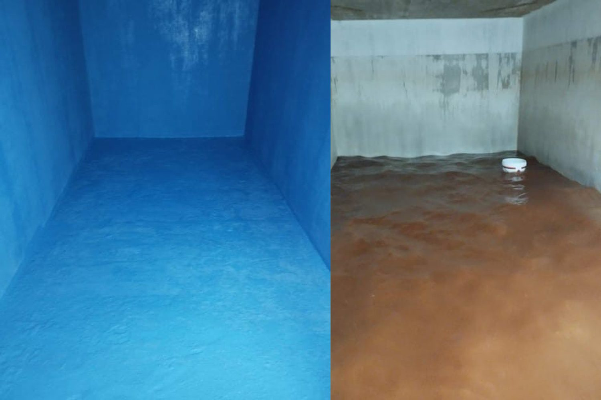

أفضل شركة لعزل خزانات المياه في جدة
دليلك الشامل لحماية مياهك واستثمارك
أفضل شركة لعزل خزانات المياه في جدة، حيث تلتقي الرطوبة الساحلية العالية بدرجات الحرارة المرتفعة،
لا يُعد عزل خزانات المياه رفاهية اختيارية، بل ضرورة قصوى للحفاظ على صحة عائلتك وسلامة الهيكل الإنشائي لعقارك. فخزان المياه الذي يفتقر إلى عزلٍ جيد قد يتحول سريعاً إلى بيئة خصبة لنمو البكتيريا والطحالب،
أو يتعرض للتآكل والتسريبات التي تهدد سلامة المبنى بالكامل. ولهذا السبب،
يبحث الكثيرون عن "أفضل شركة لعزل خزانات المياه في جدة" لضمان الحصول على حلٍ فعّال ومستدام.
ولكن، ما الذي يجعل شركةً ما هي "الأفضل" حقاً؟ يوضح هذا الدليل المعايير الأساسية التي تساعدك على اتخاذ قرارٍ مدروس، مبني على معرفة دقيقة بدلاً من الاعتماد على بحثٍ سطحي أو عشوائي.

لماذا يمثل عزل خزانات المياه في جدة تحدياً فريداً؟
تتميز الظروف البيئية في جدة بخصائص تختلف عن غيرها من المدن، مما يجعل اختيار مزود الخدمة أمراً بالغ الأهمية. تواجه خزانات المياه في جدة تحدياً مزدوجاً؛ فمن الداخل، تؤدي ملوحة المياه المحلاة إلى حدوث تآكل تنقري (تآكل على شكل ثقوب)، بينما تؤدي الرطوبة الخارجية -التي قد تصل إلى 80%- إلى تآكل ناتج عن العوامل الجوية. ونتيجة لذلك، تتدهور الخزانات من الداخل والخارج في آنٍ واحد، مما يقلل من عمرها الافتراضي بنسبة تتراوح بين 30% إلى 40% مقارنةً بالخزانات الموجودة في المدن الداخلية مثل الرياض. علاوة على ذلك، فإن ارتفاع درجة حرارة المياه داخل الخزان (التي قد تصل إلى 45-50 درجة مئوية)، بالتزامن مع الحرارة الخارجية، يخلق بيئة مثالية لتكاثر بكتيريا "الليجيونيلا" والطحالب، مما يشكل خطراً مباشراً على الصحة العامة. لذا، فإن "أفضل" شركة هي تلك التي تمتلك خبرة متخصصة في التعامل مع هذه الظروف المناخية القاسية والمحددة، وليست مجرد شركة عزل عامة.
معايير اختيار أفضل شركة لعزل خزانات المياه في جدة
عند بحثك عن الشركة المناسبة، ضع هذه المعايير في اعتبارك لتتمكن من تجاوز الإعلانات البراقة والوصول إلى الجودة الحقيقية:
1. الخبرة المتخصصة في مناخ جدة
ابحث عن شركة تمتلك سجلاً طويلاً من العمل في مدينة جدة تحديداً. إن امتلاك خبرة تزيد عن 15 عاماً في التعامل مع الظروف المناخية الساحلية القاسية يعد مؤشراً قوياً على إدراك الشركة للتحديات المحلية، وقدرتها على اختيار المواد والتقنيات الأكثر ملاءمة. استفسر عن عدد المشاريع التي أنجزتها الشركة في مدينة جدة؛ فبعض الشركات المرموقة نفذت بنجاح أكثر من 500 مشروع داخل المدينة.
2. استخدام مواد عالية الجودة ومعتمدة
تُعد المواد الركيزة الأساسية لعملية العزل؛ لذا تأكد من أن الشركة تستخدم منتجات أصلية ومعتمدة من قِبل الجهات المختصة في المملكة العربية السعودية. وفي مدينة جدة، يجب أن تكون المواد قادرة على مقاومة الملوحة والرطوبة، مثل استخدام "الإيبوكسي" المخصص للأغراض البحرية في العزل الداخلي، والطلاءات المقاومة للصدأ والطحالب في العزل الخارجي. كما يُفضل استخدام الرغوة ذات الخلايا المغلقة (Closed-cell foam) بدلاً من تلك ذات الخلايا المفتوحة، نظراً لأنها لا تمتص الرطوبة الساحلية.
3. تقديم ضمان مكتوب وموثوق
يعكس الضمان مدى ثقة الشركة في جودة أعمالها. فالشركات المهنية الجادة تقدم ضماناً رسمياً مكتوباً -قد يصل إلى 10 سنوات- على خدمات العزل التي تقدمها. احذر من الوعود الشفهية؛ فالضمان المكتوب الذي يحدد بوضوح نطاق التغطية ومدتها هو الوسيلة الحقيقية لحماية استثمارك. كما توفر بعض الشركات متابعة دورية مجانية لمدة تصل إلى 24 شهراً بعد إتمام العمل.
4. إجراء معاينة مجانية وتقديم تقرير فني
ينبغي لأي شركة مرموقة إجراء معاينة مجانية للخزان قبل تقديم عرض السعر. والأهم من ذلك، اطلب تقريراً فنياً يوضح حالة الخزان، ونظام العزل المقترح، وخطوات التنفيذ، والمواد المستخدمة؛ فهذا يمنحك تصوراً واضحاً ويجنبك أي مفاجآت غير سارة.
5. فريق فني متخصص وتراخيص سارية
تأكد من أن الشركة مرخصة رسمياً، وأنها توظف فريقاً من الفنيين والمهندسين المدربين خصيصاً في مجال عزل الخزانات، وليس مجرد عمالة عامة. استفسر عن مؤهلات أعضاء الفريق وخبراتهم في هذا المجال تحديداً.
6. السمعة والتقييمات
في عصرنا الرقمي الحالي، ابحث عن تقييمات العملاء السابقين عبر المنصات الموثوقة. فالسمعة الطيبة والآراء الإيجابية المستمرة تعد أفضل مؤشر على جودة الخدمة ومدى رضا العملاء. أنواع ومواد العزل المائي الشائعة في جدة
تعتمد جودة العزل المائي بشكل كبير على اختيار المادة المناسبة. وفيما يلي أبرز الأنواع التي تستخدمها الشركات الموثوقة في جدة:
العزل الإيبوكسي (Epoxy): يُعد الخيار الأمثل لخزانات المياه (مياه الشرب)؛ نظراً لمقاومته للمواد الكيميائية والضغط، وقدرته على منع نمو البكتيريا والطحالب. ويُعتبر الإيبوكسي المخصص للاستخدامات البحرية (Marine-grade) الخيار الأفضل لتحمل ملوحة المياه في مدينة جدة.
العزل الأسمنتي: يُستخدم لمعالجة الشقوق والفواصل في الخزانات الخرسانية، حيث يوفر طبقة حماية قوية؛ ومع ذلك، قد لا يكون كافياً بمفرده في المناطق الساحلية.
البولي يوريثين: مادة مرنة تُستخدم غالباً في أعمال العزل، وتتوفر على هيئة رغوة (فوم) أو طلاء سائل. وتُعد الرغوة ذات الخلايا المغلقة (Closed-cell foam) خياراً مثالياً لمدينة جدة نظراً لمقاومتها العالية للرطوبة.
المواد البيتومينية (القار): تُستخدم بشكل أساسي لعزل الأجزاء الخارجية للخزانات (مثل الخزانات الأرضية) لحمايتها من الرطوبة والمياه الجوفية. وتُطبق هذه المواد إما على شكل طلاء سائل أو أغشية (مثل البيتومين المعدل بـ SBS)، والتي تتميز بمرونة فائقة تمكنها من تحمل التمدد الناتج عن وجود الأملاح.
خطوات العزل الاحترافي للخزانات
لا تقتصر كفاءة الشركة على استخدام مواد عالية الجودة فحسب، بل تعتمد أيضاً على اتباع منهجية عمل دقيقة ومنظمة. وإليك الخطوات التي ينبغي توقعها:
الفحص والتقييم: إجراء فحص شامل للخزان لتحديد المشكلات -مثل الشقوق، أو التسريبات، أو تلف طبقات العزل القديمة- ومن ثم اختيار نظام العزل الأنسب.
التنظيف والتحضير: تفريغ الخزان وإزالة جميع الشوائب والطحالب بدقة. بعد ذلك، يتم فتح الشقوق ومعالجتها وملؤها بمواد مناسبة قبل البدء في تطبيق نظام العزل.
التطبيق: يتم تنفيذ طبقات العزل وفقاً للمادة والنظام المختارين، مع الالتزام التام بعدد الطبقات المطلوبة، وسُمك كل طبقة، وفترات الجفاف اللازمة بين كل مرحلة وأخرى.
الاختبار والتحقق: بعد جفاف مواد العزل، يتم اختبار الخزان بملئه بالماء للتأكد من عدم وجود أي تسريبات وللتحقق من سلامة وجودة الطبقات المنفذة.
إعادة التشغيل: بمجرد اجتياز الخزان للاختبار، يُعاد ملؤه ووضعه في الخدمة مجدداً. وينبغي للشركة تزويدك بتوجيهات حول الفترة الزمنية اللازمة للانتظار قبل إعادة ملء الخزان، وذلك بناءً على نوع المادة المستخدمة. التكلفة والضمان: نظرة واقعية
ما هي التكلفة المتوقعة؟
تختلف تكلفة عزل خزانات المياه في جدة بناءً على حجم الخزان، ونوعه (أرضي أو علوي)، وحالته الراهنة، ونظام العزل المختار. لذا، لا يوجد سعر ثابت ومحدد؛ ومع ذلك، واعتباراً من عام 2026، تبدأ التكاليف عادةً من حد أدنى يبلغ حوالي 330 ريالاً سعودياً، وقد تتجاوز 2000 ريال سعودي للأنظمة المتكاملة، مثل استخدام الإيبوكسي المخصص للاستخدامات المائية (Marine-grade epoxy) مقترناً بالعزل الحراري. وأفضل نهج هو طلب عرض سعر مفصل بعد إجراء معاينة ميدانية للموقع، ومقارنة العروض المقدمة من عدة شركات معتمدة، مع التأكد من أن السعر يشمل المواد، والضمان، وأي خدمات إضافية أخرى.
الضمان: ما الذي يجب أن تبحث عنه؟
يجب تقديم ضمان ساري المفعول ومكتوب، يوضح بوضوح مدته (غالباً ما تكون 10 سنوات) ونطاقه (أي ما يغطيه الضمان بدقة). توفر بعض الشركات ضمانات تصل إلى 12 عاماً. لا تعتمد على الوعود الشفهية؛ بل اقرأ شروط العقد بعناية. فالضمان القوي يُعد خير مؤشر على جودة العمل والمواد المستخدمة على حد سواء.